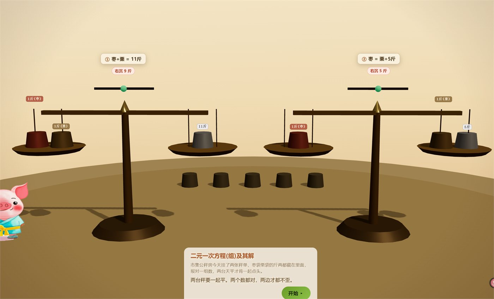

i.Professional · ongoing
Boston Bilingual Pioneer Media
Interactive Learning & Game-Based Education
Seven learning-product directions spanning interactive 3D education, AI-supported courseware and character-based learning. My work focuses on game and interaction design, visual development, and translating educational goals into meaningful activities.
Project Lead / Game Designer / 3D Artist03/2026 – Present